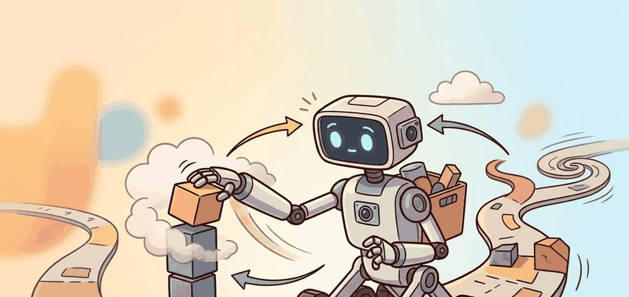
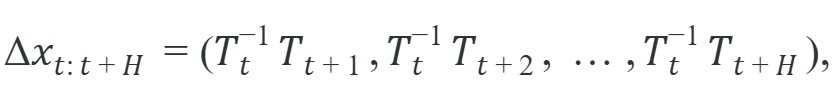
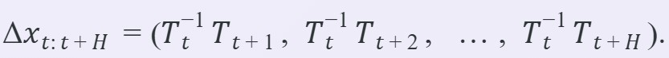

"I collected the demonstration in a kitchen. The robot insists it has never been to one."
A Portable Gripper

This section builds on the relative-action representation introduced in section 22.7 and the SE(3) coordinate-frame conventions from section 4.4. The handheld collection ideas developed here are extended in section 23.4, which adds immersive visual feedback through VR teleoperation, and in section 23.5, which covers the dataset-card discipline needed to make portable demonstrations usable for policy training.
A researcher walks into a coffee shop, pulls a custom gripper from a backpack, and spends forty minutes collecting pouring and stirring demonstrations on a real cluttered counter. No robot is present. Back in the lab, that footage trains a policy that a robot arm executes the next morning. This is the Universal Manipulation Interface (UMI) premise: untether data collection from the robot entirely, so demonstrations can be gathered anywhere humans go. At a moment when the bottleneck in embodied AI is not compute but diverse, in-context manipulation data, the ability to collect in any kitchen, workshop, or warehouse without shipping a robot there changes the scaling calculus. The sections below explain how relative action representations make that portability rigorous, what calibration discipline the approach demands, and where the geometry breaks down.
A demonstration collected anywhere in the world is only as portable as the calibration discipline that traveled with it.
The handheld unit itself is a stripped-down gripper mounted with a wide-angle egocentric camera and, in most builds, a fisheye mirror or side mirrors that expand the field of view; a human operator carries it by hand and performs the task exactly as a robot's end-effector would, with no arm, base, or actuator attached. That physical setup is what makes "in-the-wild" collection possible: the sections below explain what the unit must record (relative pose, gripper width, video), what discipline keeps that recording usable (calibration, latency matching), and what test proves it transferred correctly (robot replay), so that by the end of this section a captured session can be judged ready or not ready for policy training.
What if the most valuable thing you record in a kitchen is not where your hand was, but how far it moved between two instants? That single shift, from absolute pose to relative trajectory, is the abstraction that lets a demonstration filmed on a coffee-shop counter run on a robot that has never left the lab. Instead of asking the policy to imitate absolute human pose, the dataset stores local end-effector displacements over a short horizon. The payoff is concrete: shipping a robot to a new site costs weeks and thousands of dollars; a handheld gripper fits in a backpack and reaches the same site in an hour, so a team of five people can collect demonstrations across twenty kitchens in a single day instead of a single lab in a single month. A dataset that would have required 18 months of robot-site scheduling to reach 500 diverse episodes can be assembled in two weeks of handheld collection across 30 real environments, because the bottleneck shifts from robot availability to human walking speed.

where $T_t$ is the gripper pose at time $t$. Relative actions cut the dependence on a specific room coordinate frame. A robot with a different base pose can therefore run the learned behavior directly. Figure 23.3A captures this separation: humans demonstrate in one place, robots deploy in another, and the relative-action representation bridges the gap. The workflow diagram below traces the same idea as a three-stage pipeline, from handheld collection through processing to robot deployment.
Relative actions are, in a sense, a universal adapter plug for robot demonstrations: the outlet (room frame) changes country to country, but the device (your gripper trajectory) works everywhere, as long as you remembered to calibrate the adapter before leaving home.
Handheld systems trade robot hardware cost for calibration discipline. Camera extrinsics, that is, the fixed rotation and translation between the camera and the gripper, plus gripper geometry, timing, and object scale become the bridge between human demonstration and robot execution.
A common assumption is that relative actions make UMI demonstrations universally deployable on any robot without further configuration. This is incorrect: relative actions remove dependence on the room coordinate frame, but they do not remove dependence on gripper geometry, camera-to-gripper extrinsics, or the action-space bounds of the target hardware. A demonstration collected with a 90 mm parallel-jaw gripper cannot be replayed on a 65 mm gripper without rescaling the gripper-width channel, and a mismatched camera mount shifts every relative action in a session by a fixed bias that the policy cannot learn to correct. The correct mental model is that relative actions are a necessary condition for cross-site portability, not a sufficient one: the full bridge requires that the handheld unit's geometry and calibration are matched, or explicitly remapped, to the deployment robot before any episode enters training.
Re-run the camera-to-gripper extrinsic calibration at the start of every collection session, not just when you swap hardware. A single accidental knock to the handheld unit can shift the camera mount by several millimeters, and because UMI stores trajectories in the camera frame, that shift silently biases every relative action in the entire session. The UMI reference implementation stores calibration residuals (reprojection error per ChArUco corner, where ChArUco is a checkerboard-and-marker calibration pattern used to locate the camera precisely) alongside each episode; set a hard rejection threshold of 1.5 pixels and discard any session that exceeds it rather than including it in a "stress" split, because the error is systematic rather than random and will corrupt the action distribution rather than add useful diversity.
Code Fragment 1 shows a compact version of the relative-action transform used in many trajectory datasets. The example uses one-dimensional poses so the arithmetic is inspectable, but the same idea extends to full SE(3) transforms from Chapter 4.
# Convert absolute gripper positions into local relative actions.
# This teaches the representation before a full SE(3) trajectory library hides it.
positions_m = [0.40, 0.43, 0.47, 0.46]
relative_actions = []
for current, nxt in zip(positions_m, positions_m[1:]):
relative_actions.append(round(nxt - current, 3))
print(relative_actions)
print("largest step:", max(abs(x) for x in relative_actions), "m")The pedagogical transform above is a few lines because it is one-dimensional. In production, use a robotics transform library, UMI tooling, or LeRobot conversion utilities to handle SE(3), camera streams, timestamps, and serialization consistently.
A team teaching towel-folding can collect handheld demonstrations in several real kitchens, then deploy the policy on one robot cell. The dataset card should state which towels, table heights, lighting conditions, and gripper calibrations were seen during collection.
Calibration discipline gets a demonstration's geometry right, but geometry is only half the bridge; the other half is timing, and of every field in the collection recipe, latency is the one whose mishandling fails most silently. Latency matching deserves special attention because its effect is counterintuitive. A policy is a function that maps an observation to an action. If the observation was always captured 65 ms before the action was executed during collection, then the policy learns to anticipate 65 ms into the future. At deployment, if the pipeline delivers observations 130 ms before execution, the policy now anticipates twice as far and systematically overshoots. The fix is not to minimize latency but to make it consistent, a principle called latency-invariant policy training: measure the end-to-end delay in your robot stack, then replay that exact delay during training by artificially offsetting the observation timestamps in the dataset. This is why step 4 in the recipe below is not a performance optimization but a correctness requirement.
Think of a goalkeeper who trained for years on a field where the ball arrives 0.1 seconds after the striker kicks it, and is then moved to a field where the ball travels twice as fast. Every dive the keeper practiced is timed for the old flight delay, so every save attempt arrives slightly too early. The keeper is not confused about direction, just timing. A policy trained with a 40 ms observation delay and deployed with a 120 ms delay makes the exact same error: it reaches for where the object will be in 40 ms, but the world has been updated for 120 ms by the time the command executes, so every motion overshoots by a consistent margin. Matching the delay in training to the delay in deployment is the equivalent of practicing on the same-speed field where the game will actually be played.
The robot replay protocol matters because handheld collection opens a gap that only physical execution can close. A human operator compensates for hand tremor, calibration drift, and frame-rate irregularities in ways the recorded trajectory never captures. When those compensations corrupt the relative actions, the episode passes the manifest but fails on the arm. The cost is asymmetric: one silent bad episode trains the policy on physically impossible transitions, and engineers then blame model capacity instead of data quality.
In practice, the protocol commands the recorded relative action sequence straight to the robot arm in open loop (the controller executes the pre-recorded actions blindly, without adjusting based on new sensor feedback), with no policy inference. The arm executes each $\Delta x_t$ step. The controller then compares the end-effector position against the expected pose from the original trajectory. Tracking error above a task-specific threshold (typically 2 to 5 mm for pick-and-place tasks) flags the episode for recollection. Open-loop replay isolates data quality from policy quality: if the robot cannot reproduce the recorded motion at all, discard the episode rather than pass it to training.
Input: Raw episode recording with absolute gripper poses $T_0, T_1, \ldots, T_N \in SE(3)$, egocentric video frames $\{v_t\}$, gripper widths $\{w_t\}$, camera-to-gripper extrinsic $E$, measured pipeline latency $\delta$ (ms), and action-chunk horizon $H$
Output: Deployable episode $\mathcal{D} = \{(o_t, \Delta x_{t:t+H}, w_t)\}$ with calibration residual $\epsilon$ and readiness flag $r \in \{0, 1\}$

So far: the pipeline has calibrated the camera-to-gripper extrinsic, reprojected every raw pose into the gripper frame, and converted absolute poses into a relative action chunk; the remaining steps handle timing (latency shift), gripper-width normalization, and the replay test that certifies the episode as deployable.
Trace the relative-action chunk computation with one-dimensional poses (position only) so every number is inspectable. Suppose the recorded gripper x-positions over four timesteps are $T_0=0.40$, $T_1=0.43$, $T_2=0.47$, $T_3=0.46$ (meters), and the horizon is $H=2$. For a 1D translation, $T_t^{-1}T_{t+k}$ becomes the subtraction $(T_{t+k}-T_t)$. Anchoring at $t=0$: the first chunk element is $T_1-T_0 = 0.43-0.40 = 0.03$, the second is $T_2-T_0 = 0.47-0.40 = 0.07$, so $\Delta x_{0:2} = (0.03,\ 0.07)$. Now re-anchor at $t=1$: $T_2-T_1 = 0.47-0.43 = 0.04$ and $T_3-T_1 = 0.46-0.43 = 0.03$, giving $\Delta x_{1:2} = (0.04,\ 0.03)$. Notice the payoff directly: if the entire trajectory were shifted by adding $+5.0$ m (a different room frame), every subtraction cancels that offset and the chunks $(0.03, 0.07)$ and $(0.04, 0.03)$ stay identical. That cancellation is exactly why the representation survives the journey from kitchen to robot cell.
In-the-wild demonstrations often include human body motion, gaze, and tactile feedback that the robot will not have. The dataset card should state which cues are available to the robot and which cues were only available to the person collecting data.
If demonstrations are collected with a camera pipeline that introduces 40 ms of latency and the robot deployment pipeline introduces 120 ms, the policy was trained on a world that responds 80 ms faster than the one it now inhabits. The result is typically not a crash but a subtle drift: the robot reaches for where the object was, not where it is. This failure often looks like poor generalization when it is, in a case like this, actually a timing bug. The UMI paper (Chi et al., 2024) addresses this directly by recording and replaying inference-time latency during training, so the policy's internal timing model matches deployment reality. If your robot's observed success rate drops sharply compared to collection-time replays, latency mismatch is the first variable to audit.
Build a manifest that decides whether handheld demonstrations are ready for robot policy training.
pip install pandasStart with two episodes and leave one calibration field as a latency_review so the reader must decide what evidence is missing.
# Build a handheld-demonstration manifest with one deliberate audit field.
# The example includes the stress condition explicitly so the audit can run end to end.
episodes = [
{"id": "umi_001", "camera_calibrated": True, "latency_ms": 65, "split": "train"},
{"id": "umi_002", "camera_calibrated": "latency_review", "latency_ms": 140, "split": "stress"},
]
print(episodes)Flag episodes with missing calibration or excessive latency.
# Apply a readiness rule that separates clean data from stress or repair data.
for episode in episodes:
ready = episode["camera_calibrated"] is True and episode["latency_ms"] <= 100
episode["split"] = "train" if ready else "review"
summary = {split: sum(ep["split"] == split for ep in episodes) for split in {"train", "review"}}
print(summary)The lab should print one ready episode and one review episode, then prompt a short note explaining whether the review row belongs in a stress split or should be recollected.
Complete Solution
# Complete manifest audit for handheld demonstrations.
# It keeps clean training data separate from risky but useful stress examples.
episodes = [
{"id": "umi_001", "camera_calibrated": True, "latency_ms": 65, "split": "train"},
{"id": "umi_002", "camera_calibrated": False, "latency_ms": 140, "split": "stress"},
]
for episode in episodes:
ready = episode["camera_calibrated"] is True and episode["latency_ms"] <= 100
route = "clean-train" if ready else "stress-or-recollect"
print(episode["id"], route)Three active directions are pushing the boundaries of in-the-wild handheld collection beyond the original UMI formulation.
Direction 1: Multi-embodiment data reuse across gripper morphologies. The original UMI system assumes a fixed handheld gripper geometry; transferring a dataset to a robot with a different end-effector (parallel jaw vs. three-finger vs. suction) requires non-trivial action-space remapping. The CrossFormer work from Stanford (Doshi et al., 2024, "Scaling Cross-Embodied Learning") trains a single transformer policy across 20-plus robot morphologies by learning a shared token vocabulary for actions. The open question is whether handheld UMI datasets can serve as zero-shot source data for this cross-embodiment transfer without requiring the collector to annotate gripper-specific contact modes.
Direction 2: Visuotactile UMI extensions. Current handheld units capture only egocentric RGB and wrist pose, but many precise tasks require contact-force cues. The CMU group's SPARTN system (2024), a data-augmentation method for adding synthetic tactile feedback to demonstrations, and MIT's GelSight Svelte finger (2024), a thin optical tactile sensor, demonstrate that thin visuotactile sensor pads can be integrated into a portable handheld form factor under 300 g of added mass. Collecting force-contact observations in the wild then introduces a new calibration problem: how to normalize tactile readings across sessions where contact geometry and gripper wear shift the baseline reading.
Direction 3: Automatic demonstration quality filtering with vision-language models. Human annotators flag broken episodes by reviewing video, but at scale this is a bottleneck. Recent work from UC Berkeley (OpenVLA, Kim et al., 2024) and from the DROID dataset team (Khazatsky et al., 2024) suggests that vision-language models (VLMs) can score episode quality, task completion, and instruction alignment from raw video with recall reported above 85 percent on held-out human judgments in preliminary evaluations (as of 2024); independent replication on diverse UMI manifests has not yet been established. Applying VLM-based filtering to UMI manifests could remove the manual QA step that currently limits collection throughput.
Open problem for a PhD student: All three directions above assume the handheld collector is a trained researcher. In practice, crowdsourced UMI collection (giving kits to non-expert annotators) produces episodes with highly variable wrist motion style, lighting, and scene composition. No public benchmark exists for measuring how policy quality degrades as a function of collector skill diversity in a UMI-style dataset, nor is there a principled curriculum strategy for selecting which heterogeneous episodes to include first. Building that benchmark and identifying the data-selection criterion that best predicts downstream policy success rate is a well-scoped and currently open dissertation chapter.
The Stanford and Columbia UMI deployment (Chi et al., 2024) used backpack-portable handheld grippers to collect dynamic tasks such as tossing, cup arrangement, and dish washing across multiple homes and labs, then trained Diffusion Policies that transferred zero-shot to UR5e and Franka arms in cells the operators never visited. The relative-action plus latency-matching recipe let demonstrations gathered by hand in a real kitchen drive a robot in a separate building, validating that the geometry bridge survives the move from human to hardware.
Can you state which information exists in the handheld demonstration but will not exist at robot deployment time? Those missing cues are the first place to look when zero-shot transfer fails.
Handheld collection scales diversity by decoupling demonstration from robot deployment. It succeeds only when relative actions, calibration, and latency make that decoupling explicit.
Write a dataset-card paragraph that explains why a handheld-gripper split tests object generalization rather than memorization of one collector's motion style.
Beginner (weekend): Build a relative-action replay auditor in Python using a LeRobot-format HDF5 dataset: load a recorded episode, compute the relative action sequence, then plot per-step translation magnitude to flag outliers caused by calibration drift. The key challenge is loading the raw SE(3) poses from HDF5 and converting them to local displacement vectors using scipy.spatial.transform without introducing numerical drift over long episodes.
Intermediate (1 to 2 weeks): Implement the full UMI episode processing pipeline from Algorithm 23.3 in simulation using MuJoCo and ROS2: record a scripted pick-and-place trajectory as absolute gripper poses, apply the latency-shift and relative-action transform, then replay the processed episode open-loop on a simulated Franka arm and measure end-effector tracking error against the ground-truth trajectory. The key challenge is correctly aligning observation timestamps with the simulated controller timestep so that the latency offset applied during processing matches the MuJoCo step size at replay, preventing the systematic overshoot described in the latency-mismatch pitfall.
Section 23.4 turns to immersive and VR teleoperation, where active visual feedback changes what the operator can perceive during collection.
Defines the handheld gripper approach, latency matching, and relative-trajectory action interface used in portable demonstration collection.
Cheng, X. et al. (2024). Open-TeleVision: Teleoperation with Immersive Active Visual Feedback.
A current reference for immersive visual feedback, active perception, and VR-style operator embodiment in data collection.
Zhao, T. Z. et al. (2023). Learning Fine-Grained Bimanual Manipulation with Low-Cost Hardware.
Introduces ALOHA and ACT, making the connection between low-cost bimanual teleoperation, action chunking, and real-world manipulation data explicit.
A kinematically matched leader device study that directly compares teleoperation ergonomics and reliability against other low-cost interfaces.
Hugging Face LeRobot Documentation.
Documents dataset conversion, policy training, and robot-control utilities that turn teleoperation logs into reusable learning artifacts.